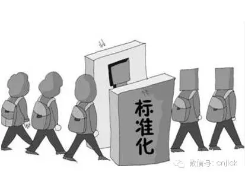

国内首个电水气热能源计量管理系统系列标准正式发布

近日，中国电科院牵头制定的团体标准T/CEC 122.1-2016《电、水、气、热能源计量管理系统 第1部分：总则》、T/CEC 122.2-2016《电、水、气、热能源计量管理系统 第2部分：系统功能规范》、T/CEC 122.31-2016《电、水、气、热能源计量管理系统 第3-1部分：集中器技术规范》、T/CEC 122.32-2016《电、水、气、热能源计量管理系统 第3-2部分：采集器技术规范》、T/CEC 122.41-2016《电、水、气、热能源计量管理系统 第4-1部分：主站远程通信协议》、T/CEC 122.42-2016《电、水、气、热能源计量管理系统 第4-2部分：低功耗微功率无线通信协议》6项标准同批次发布，实施日期为2017年1月1日。
《电、水、气、热能源计量管理系统》系列标准的制定，规范了系统的架构、功能要求、设备要求、通信协议、试验方法等内容，将促进系统、设备间互联互通，降低系统建设投资及运行维护成本。该系列标准的发布实施将有效指导电、水、气、热能源计量管理系统建设，通过统一的数据采集终端和通信信道，实现居民用电表、水表、燃气表、热量表四表数据信息的远程自动采集，构建用户用能综合数据平台，有力推动水、气、热计量产品的智能化发展，实现能源计量产业的同步提升，有效提升社会公共服务水平，实现社会公共服务资源效益最大化。
《电、水、气、热能源计量管理系统》系列标准是中国电力企业联合会2016年1月28日批准下达的第一批团体标准制定计划，由中国电科院牵头承担，联合电、水、气、热能源供应商、表计厂商、方案厂商和系统集成商共同参与制定，是能源领域一次跨行业、跨专业的战略合作成果，该系列标准在11月2日中国电力企业联合会举办的第十六届中国国际电力设备及技术展览会上正式对外发布。
【计测传媒】本文刊载数据部分来源于互联网，计测传媒平台进行总结发布，供业内读者参考交流。